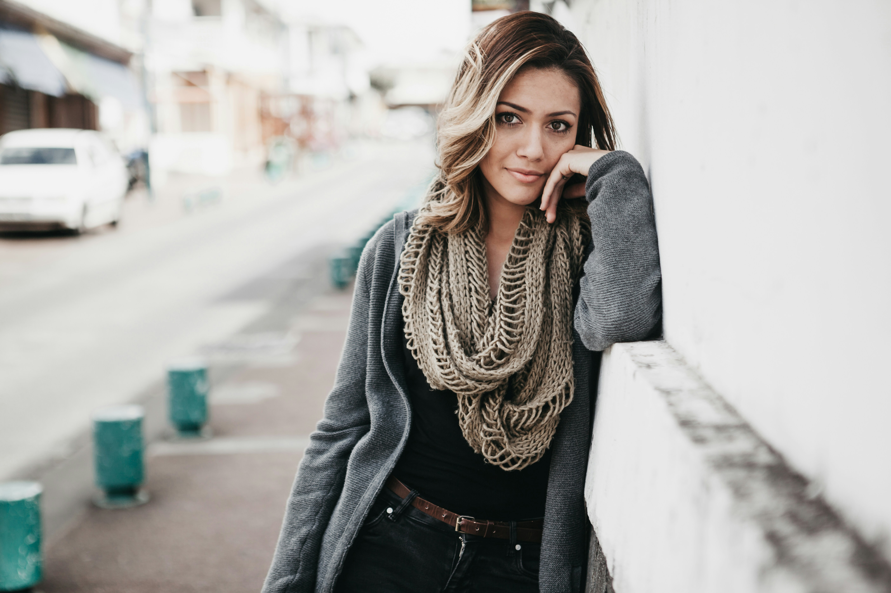
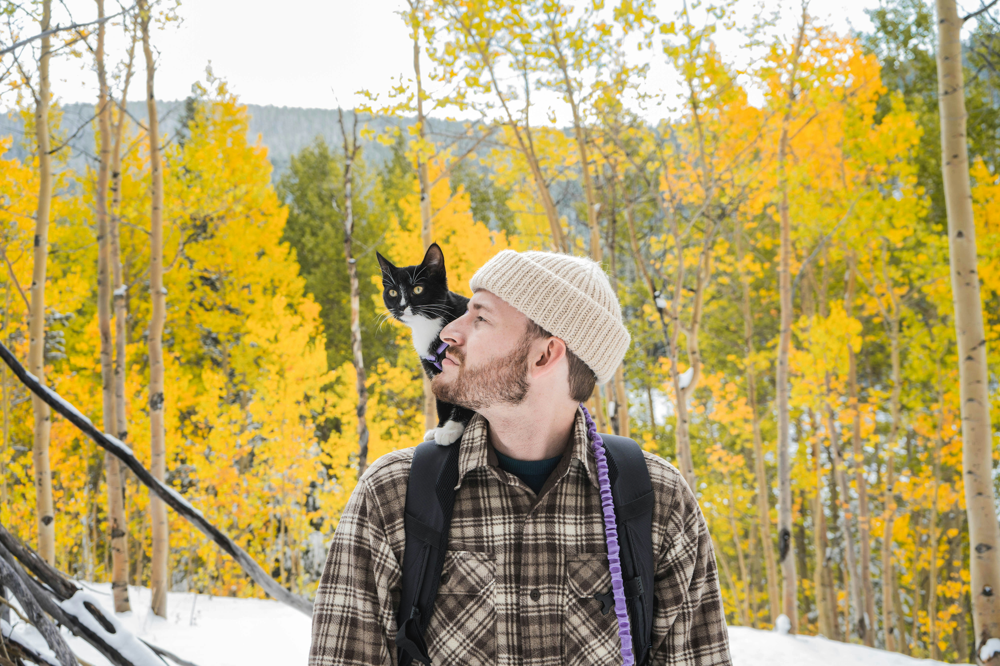

Amanda specializes in crochet animals and decorations. Whether your child wants some new friends under the sea or you need an accent piece to brighten a room, she's got you covered.

Brian warms heads and toes with his hats and socks in a variety of styles. His cat ensures only the sturdiest yarn goes into his projects so you won't catch a draft through a worn out hole.Celeste is our sweater expert and can incorpate custom letters and designs in the yoke to keep your loved ones warm over the winter holidays and beyond.